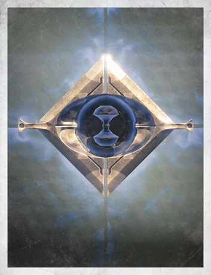
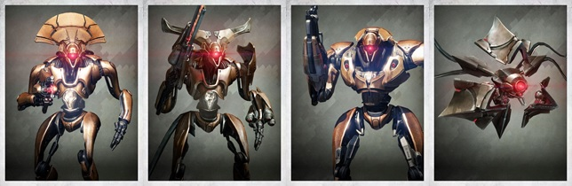
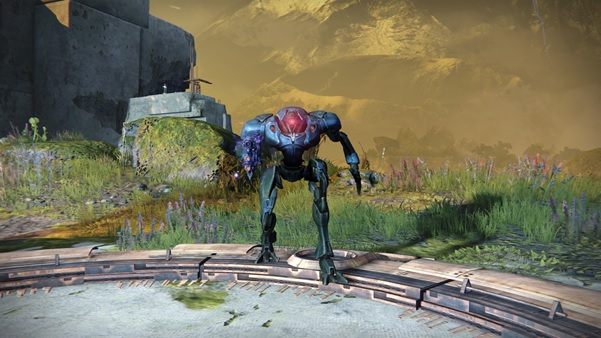
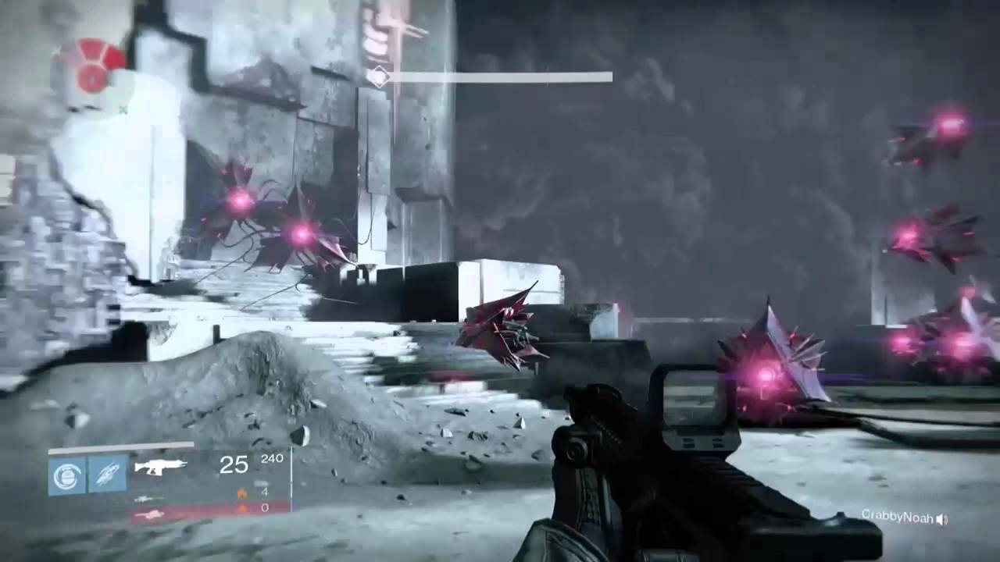
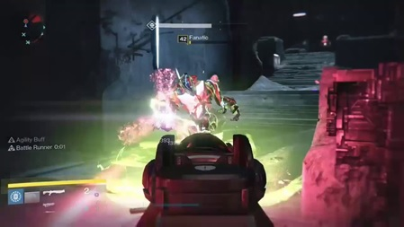
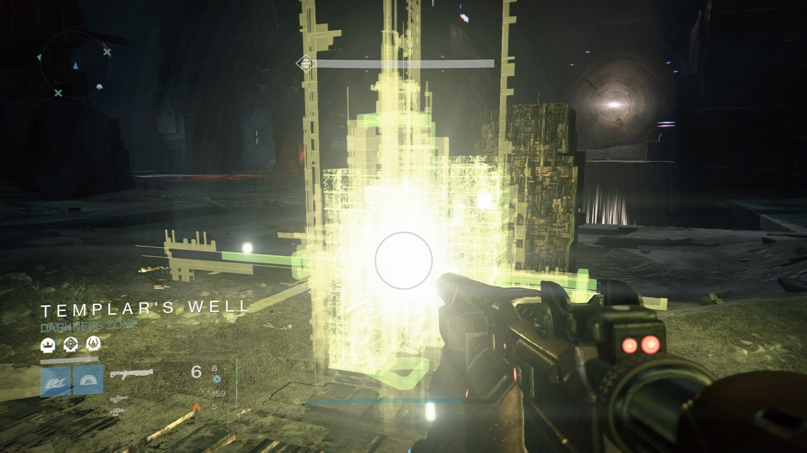
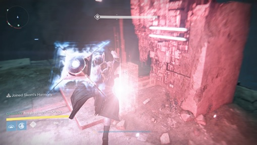
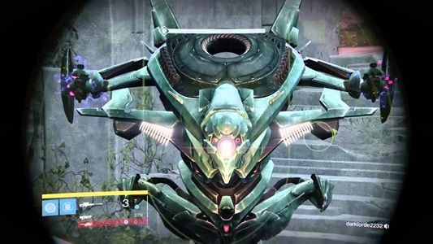
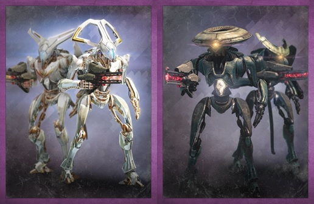
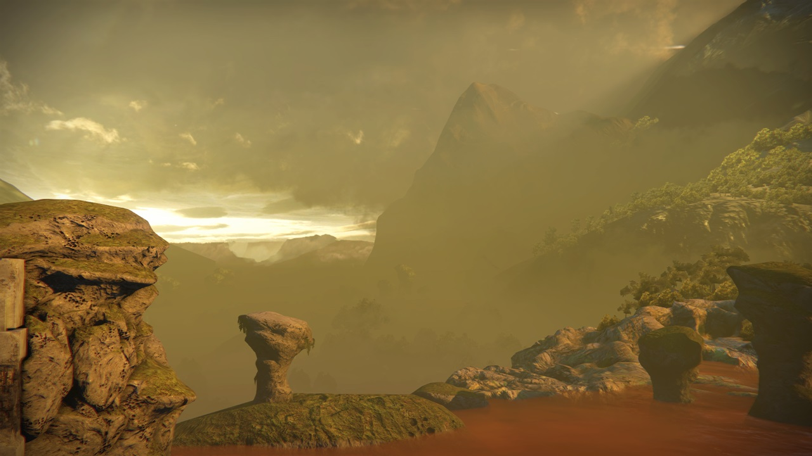

It appears you've found a page that has not been completed yet! Return at once, knave!

Released on September 16th 2014, the Vault of Glass is the first of the four Raids in Destiny to have been released. The Raid can only be unlocked after completing the Main Storyline of the Destiny 1. Here are the level requirements for each version of the Raid:
The most powerful Exotic Weapon to use in the Vault of Glass is arguably the Gjallarhorn. In addition to the intrinsic perk, Wolfpack Rounds, the Gjallarhorn can deal a massive amount of damage to a target, has great crowd control possibilities and tracking rounds, leading to more accurate shots when zoomed in. Many of the Vault of Glass’ unique enemies and The Templar have large health-pools and small critical spots. The Gjallarhorn can deal large burst damage with each rocket and doesn’t require players hitting these spots to achieve this. With the release of Destiny’s fourth expansion, Rise of Iron, the Gjallarhorn is now easily obtainable to all players and you are not required to complete a Raid to get it.
Found within several encounters of the Vault of Glass is “The Aegis”. It is a Shield-based Weapon that can counteract many mechanics found in the Encounters of the Vault of Glass. Here are the controls to using this weapon:
Melee Attack (On Land): The Player executes a Melee-Bash attack that can be used in combination three more times. (Bash-Bash-Bash). Melee Attack (In Mid-Air): The Player executes an aerial dash-attack, which also allows them to hover for a short bit. Primary Fire (On Land): The Player executes a powerful Shield-Bash that can instantly kill weaker enemies. Primary Fire (In Mid-Air): The Player executes an Area-of-Effect Shockwave that can instantly kill weaker enemies. Grenade: The Player creates an AOE barrier around them that protects them and anyone inside the barrier from any damage. Additionally, the barrier also creates a Cleanse effect, removing important de-buffs in some of the Encounters. The Cleanse effect cannot be used while sprinting and/or in mid-air. Super: Shoots a powerful Orb of Light that targets ahead of the user in a straight line, tracking any enemies nearby.
Goblins are used as cannon-fodder in the Vault of Glass Raid, serving as an excellent way for players to generate Orbs of Light and Super Energy. Be wary, however, as Goblins can still prove to be formidable force, as their large numbers can easily overwhelm a player if left unchecked.
Hobgoblins are one of the more dangerous enemies you’ll find the Vault of Glass. Their Solar Line Rifle attacks will very often three-shot you if you’re out in the open. Unlike various Patrol and Story Mission locations, Vex Hobgoblins have very specific spawn placements in the Vault of Glass.
Minotaurs are the bulkiest and most dangerous of the regular enemies you will face in the Vault of Glass. Their large health and powerful Void Bolt attacks make them very dangerous foe in close-proximity.
Harpies, like Goblins, are used a cannon-fodder in some instances of the Raid, yet still can prove to be very dangerous to players in large groups. Additionally, Harpies can move extremely fast and have a rapid solar attack that can easily take down a player’s shields, leaving other enemies to finish the job.
In addition to these default enemy types, the Vault of Glass also contains some unique enemy variations, each possessing their own mechanics and troubles to players.
Praetorians are a unique, Major-Class variation of the Minotaur enemy found in various parts of the Vault of Glass Raid. Save for their unique coloration and aggressive nature (they often come into close-proximity to players to deal heavy damage), they are no different than a regular Major-Class Minotaur. Their unique mechanic in the Raid, however, is the ability to deactivate Sync Plates when standing inside one.
Supplicants are a unique variation of the Harpy enemies. In addition to possessing a regular Harpy’s attack patterns, Supplicants can detonate themselves in close-proximity. If a player is right next to them and hit by the explosion, they will instantly be killed (unless they have defensive buffs applied and/or are blocking with a Sword).
Fanatics are an extremely dangerous, Major-Class variation of the Goblin enemy. Fanatics behave like Vex Goblins without their heads and often charge towards the player. Much like a Supplicant, if a Fanatic comes into close-proximity of a player, they will explode, dealing a large amount of damage. Additionally, when a Fanatic dies, it will leave a small pool of corrupted, green energy known as a Pool of Negation. If a player touches this pool, they will be affected with the debuff, Marked for Negation.
Yellow Oracles are stationery enemies found in the Vault of Glass that are only found in two encounters on Normal Mode and one on Hard Mode. Oracles have pre-determined spawns and cannot attack players. However, if left unchecked, Yellow Oracles will apply the debuff, Marked for Negation to the player.
Red Oracles, much like Yellow Oracles, are stationery enemies found in the Vault of Glass that are found in one encounter on Normal Mode and two on Hard Mode. They behave exactly like Yellow Oracles, except when a Red Oracle activates, it will mark the player with the Prophecy of Doom debuff, draining your Super energy and instantly killing you shortly afterwards.
Gatekeepers are a unique, Major-Class enemy variation of the Vex Hydra. Aside from the name and special appearance, they behave no differently than a regular Major-Class Hydra.
Precursors and Descendants are unique, Major-Class enemy variations of the Vex Goblins, Hobgoblins and Minotaurs. Aside from the names and special appearances, they behave no differently than their regular counterparts.
The Vault of Glass Raid is filled with powerful enemies that possess large health-pools and strong attacks. Additionally, the locations you will be fighting in often include multiple narrow passageways, where enemy ambushes are very likely to occur. Because of this, the most effective way to complete the Vault of Glass’ encounters is to play defensively and conservatively. Ensure your weapons and armour allow you to deal high-burst damage in close-proximity, and always keep a look out on your surroundings. By keeping tabs on the enemy spawns during an encounter, you won’t be overwhelmed as the fight continues. Close-Range weapons such as Shotguns, Snipers and Swords work wonders on many of enemies in the Vault of Glass, and will save you a lot of hassle during the Raid’s more challenging encounters.